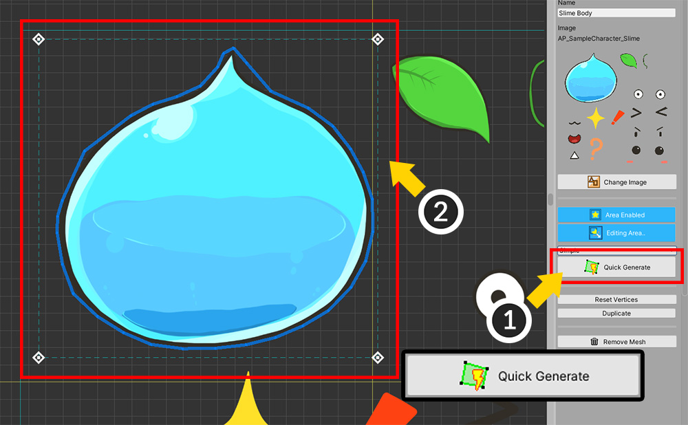

AnyPortrait > 시작하기 > 1.3. 메시 만들기
1.3. 메시 만들기
1.0.0

Hierarchy UI에서 (1) "Add Mesh" 버튼을 누르고 생성된 메시(Mesh)를 선택합니다.
메시를 선택하면 우측 화면에서 "Setting", "Mesh Edit", "Pivot", "Modify" 메뉴가 나타납니다.
Setting 메뉴를 선택한 상태에서 (2) 메시의 이름을 적어줍니다.
(3) "Change Image" 버튼을 눌러서 (4) 앞에서 만든 이미지를 선택하여 (5) "Select" 버튼을 누릅니다.

우측 UI에서 "Mesh Edit" 메뉴를 선택합니다.
"Mesh Edit" 메뉴의 툴을 이용하여 메시를 만들 수 있습니다.

메시를 편집하는 툴입니다.
마우스 좌클릭 을 하면 추가 또는 연결을 합니다.
선택한 대상을 드래그 를 하면 이동할 수 있습니다.
마우스 우클릭 을 하면 삭제를 합니다.
1. Vertex+Edge 툴 : 버텍스를 추가하면서 자동으로 선분을 연결합니다.
2. Vertex 툴 : 버텍스를 추가합니다.
3. Edge 툴 : 선분을 연결하거나 Turn을 합니다.
4. Polygon 툴 : 폴리곤을 선택합니다. Delete 를 눌러 삭제할 수 있습니다.
5. Auto Link Edge : 자동으로 선분을 연결합니다.
6. Make Polygons : 모든 작업이 끝나고 자동으로 폴리곤을 생성합니다.
7. Remove All Vertices : 현재 모든 버텍스를 삭제합니다.
위 기능들에 대한 자세한 설명은 아래와 같습니다.
(Mac OSX 버전에서는 Control 대신 Command 를 단축키로 사용합니다.)
1. Vertex+Edge 툴
마우스 좌클릭 : 버텍스 추가 및 선분 연결
드래그 : 버텍스 이동
마우스 우클릭 : 버텍스 또는 선분 삭제
Ctrl+좌클릭 : 가까운 버텍스로 스냅
Shift+좌클릭 : 선분 교차점에서 버텍스 생성
Shift+우클릭 : 버텍스 삭제시 선분이 삭제되지 않음

2. Vertex 툴
마우스 좌클릭 : 버텍스 추가
드래그 : 버텍스 이동
마우스 우클릭 : 버텍스 삭제
3. Edge 툴
마우스 좌클릭 : 선분 연결 및 폴리곤내의 선분 회전
마우스 우클릭 : 선분 삭제
Ctrl+좌클릭 : 가까운 버텍스로 스냅
Shift+좌클릭 : 선분 교차점에서 버텍스 생성

4. Polygon 툴
마우스 좌클릭 : 폴리곤 선택
Delete 키 : 선택한 폴리곤 삭제

5. Auto Link Edge
버튼을 누르면 자동으로 선분을 생성하여 연결합니다.
모든 버텍스를 연결하는 것은 아니며, 폴리곤으로 만들기 용이하게 만드는 기능입니다.
모양에 따라 연결이 이상할 수 있으니 실행 결과를 확인해야합니다.
6. Make Polygons
버튼을 누르면 작업한 버텍스와 선분 형태를 분석하여 자동으로 폴리곤을 만듭니다.
폴리곤이 생성이 되어야 렌더링이 되므로 꼭 실행해야합니다.
폴리곤이 된 상태에서 버텍스를 수정할 수 있습니다.
내부적으로 계산된 삼각형 메시가 노란색 선분으로 표현됩니다.
Edge 툴을 선택한 뒤 이 노란색 선분을 클릭하면 회전(Turn)을 합니다.
만약 문제가 생긴 폴리곤이 발생하면 해당 폴리곤을 삭제하거나 버텍스를 삭제한 뒤 다시 작업하면 됩니다.
위 기능들을 활용하여 슬라임의 몸을 완성합니다.

메시를 만드는 과정은 영상 튜토리얼을 통해서 더욱 자세히 확인할 수 있습니다.
이제 중심점(Pivot)을 수정해야합니다.
현재 상태에서 메시의 위치가 원점이 아닌 것을 확인할 수 있습니다.
메시의 중심점은 이후 "회전", "크기 확대/축소"를 할 때 축이 되므로 매우 중요합니다.

우측 메뉴에서 (1) "Pivot"을 선택합니다. (만약 이때 폴리곤이 생성되지 않았다면 아무것도 나오지 않습니다.)
(2) 작업한 메시를 드래그하여 격자의 중심으로 이동합니다.
격자의 원점이 곧 메시의 중심점이 됩니다.
위와 같은 방법으로 모든 이미지에 대해서 메시들을 만듭니다.
(배경과 이미지가 구분이 되지 않는다면 Setting 버튼을 눌러서 배경색을 바꾸면 작업하기 편합니다.)
자동으로 메시 만들기

AnyPortrait v1.3.0에서 추가된 자동 메시 생성 기능을 이용하면 작업 시간을 크게 단축할 수 있습니다.
자세한 내용은 관련 페이지에서 확인해주세요.